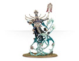

纳加什军团
纳加什军团包含了无数的不死生物，它们的种类很多，从基本的骷髅兵到高等的骨天使，它们不惧怕死亡，向着敌人发起无尽的冲锋，前一秒倒下的骷髅下一秒又站立起来继续攻击，如同潮水一样无穷无尽，将敌人吞噬。

纳加什：他是死亡界的统治者，虽然曾被混沌打败，但这并不能否定他死亡之主的地位，纳加什精通魔法，尤其是死灵魔法。
阿克汉： 阿克汉是纳加什座下四大军团中圣礼军团的领导者，也是纳加什的弟子，对纳加什忠心不二，作为纳加什的弟子，他对死灵魔法也十分擅长。